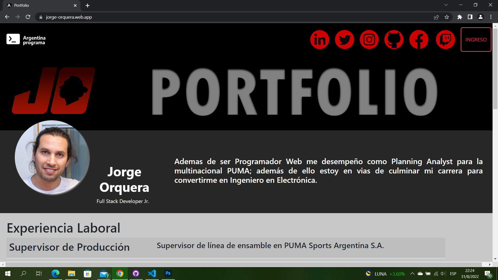

<div class="row">
  <h1>Proyectos realizados</h1>
  <div class="contenedor">
    <div>
      <h1>Portfolio Personal</h1>
      <h3>Año 2022</h3>
      <a href="http://jorge-orquera.web.app">Enlace al proyecto</a>
      <div class="container">
        <div class="cont col-lg-9">
        <h4>
          Portfolio realizado a modo de Proyecto Final para el curso de
          capacitación Argentina Programa. Para el proyecto se utilizó HTML,
          CSS, TS, Angular, Bootstrap, MySQL, JS, Firebase, Heroku, Clever
          Cloud; entre otras herramientas.
        </h4>
        </div>
        <div class="cont col-lg-4">
          
        </div>
      </div>
    </div>
  </div>
</div>
